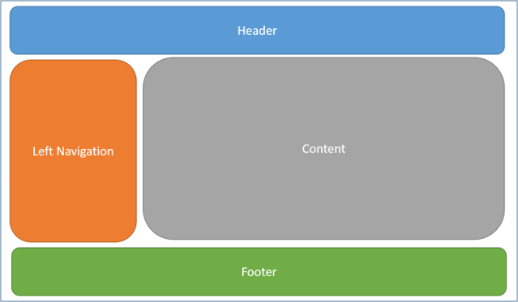
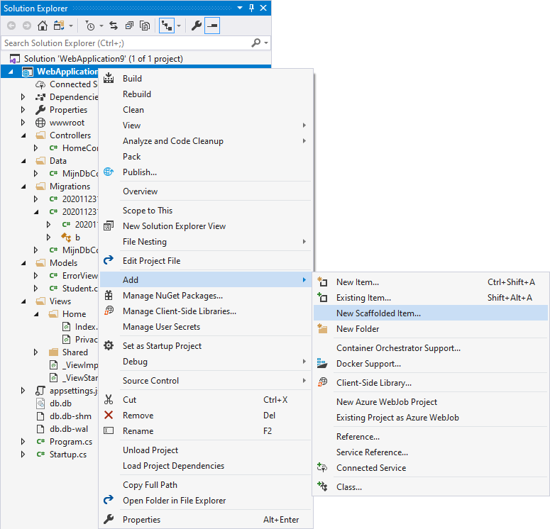
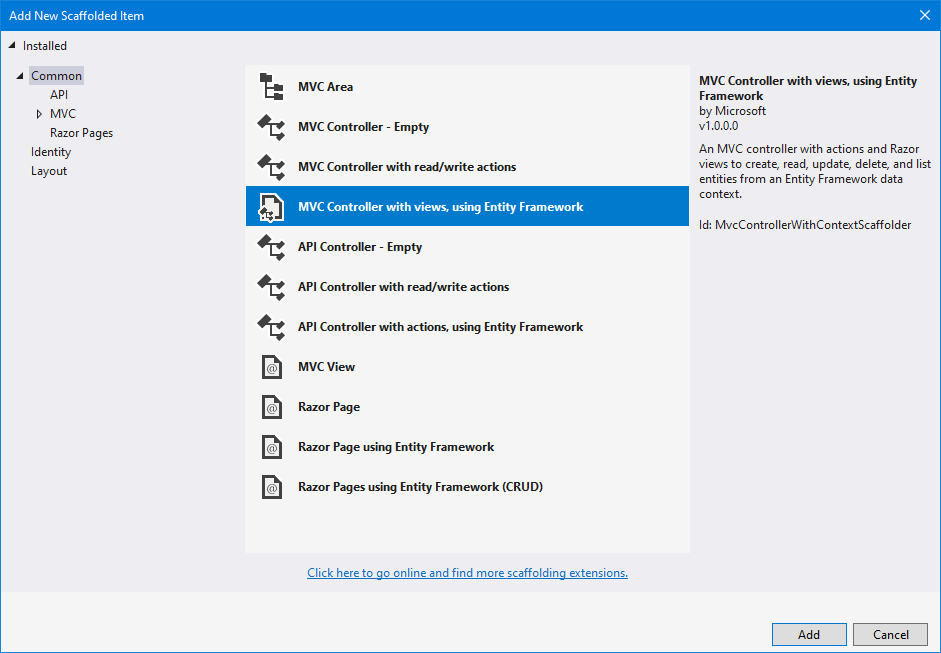
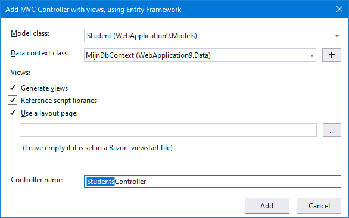

Een pagina kan er bijvoorbeeld zo uitzien
De header, footer en navigation zijn heel vaak gelijk voor verschillende pagina’s
Oplossing: Shared Layout file (MSDN)
- Footer en Header komen op elke pagina voor (het gemeenschappelijke gedeelte)
- Het contentgedeelte is voor elke URL verschillend
- Anders gezegd: voor elke Action van iedere Controller wordt een andere pagina getoond
-
In de View van de Action methode geef je aan welke Shared Layout je wilt gebruiken:
@{ Layout = "_LayoutSimple"; ViewData ["Title"] = "Index"; }
-
Een Shared Layout moet starten met de regel
<!DOCTYPE html> - Dit is bij een normale HTML-file altijd de eerste regels (volgens de HTML-syntax)
- In de head kun je links naar stylesheets en javascript-bestanden toevoegen
- De content (die wordt aangemaakt in je View) wordt toegevoegd op de plek van
@RenderBody() -
De Views die je zelf maakt, zijn dus geen zelfstandig HTML document
-
en beginnen dus ook niet met
<!DOCTYPE html>
-
en beginnen dus ook niet met
-
Check met F12 de DOM van het uiteindelijke HTML-document
-
Daar zie je dat de HTML in je View is toegevoegd op de plek van
@RenderBody()
-
Daar zie je dat de HTML in je View is toegevoegd op de plek van
- In de Shared Layout kun je
ViewData gebruiken:- Bijvoorbeeld om de titel van de pagina in de header te tonen
- Of om een variabele in de header of in de footer te tonen
- De je Action-method van de Controller moet je deze
ViewData dan natuurlijk wel vullen! - Het hele idee van een Shared Layout is het voorkomen van dubbele HTML in de diverse Views
- Dubbele HTML-code is namelijk slecht onderhoudbaar omdat elke wijziging op meerdere plekken moet worden doorgevoerd
Ook Partial Views (MSDN) zijn bedoeld om onderhoudbaarheid van de HTML in een View te verbeteren:
- Je neemt een deel van je View op in een Partial View
- Dit is een onderdeel van je pagina dat ook op andere pagina’s kan worden hergebruikt
- Op deze manier kun je een grotere View in kleinere stukken opdelen
- De Partial View is vooral handig voor HTML die in meerdere Views voorkomt maar niet in alle Views:
- Deze HTML-code kun je dus niet in een Shared Layout plaatsen
-
Als je bijvoorbeeld een inlogformulier wilt plaatsen op meerdere pagina’s, dan doe je dat als volgt:
<partial name="_LoginPartial" /> - Razor zoekt nu naar "_LoginPartial.cshtml" in Views/Shared.
- Je kunt ook data meegeven aan de Partial View
- Het is sterk aan te bevelen om een Model mee te geven (zo'n Partial View wordt een Strongly Typed Partial View genoemd).
- In de View wordt dan compiletime al gecheckt of de Properties van het Model bestaan
- Je kunt dit bijvoorbeeld gebruiken voor een lijst met nieuwsberichten (bijv.: NOS.nl)
@foreach (var artikel in @Model) { // @Model is een List<Artikel> <partial name="_Artikel" model="artikel" /> } // alternatief: <partial name="_Artikel" for="@artikel" />
- Naast een (strongly typed) Model kun je ook gebruik maken van ViewData
- Ook hiervoor geldt natuurlijk dat de Action het Model of de ViewData moet vullen
- Want: een Partial View heeft geen eigen controller!
- Een Model komt door de ORM in de database terecht. Een ViewModel niet.
-
Een Model hoeft geen View te hebben. Een ViewModel wel.
- Een ViewModel heeft geen bestaansrecht zonder de bijbehorende View.
- Een Model representeert een entiteit in het domeinmodel, dus staat centraal in de webapplicatie. Een ViewModel allebei niet.
- Een Model representeert de toestand van de applicatie met bijbehorende business logica, en kan op veel plekken in de webapplicatie worden gebruikt.
- Een ViewModel wordt alleen gebruikt om data mee te geven van een Controller naar View (en vanaf daar mogelijk weer verder naar een Partial View).
- ViewModels staan in een andere map dan de Models: voorkomt verwarring
Dit is een architectuur pattern: Model-View-ViewModel (MVVM).
Voorbeeld 1:
Voorbeeld 2:
- In mijn View wil ik echter gegevens van het bedrijf laten zien en 2 lijsten; één met alle projecten en één met projecten die achterlopen
- Ik kan echter maar 1 Model meegeven aan een view
- Je kunt dat natuurlijk omzeilen met ViewData[“OverdueProjects”] = … etc.
- Maar een ViewModel biedt een strongly typed oplossing die beter is
Niet alle data-annotaties zijn constraints in de database!
- Bijv.
[Regex(...)] en[StringLength(10)] zijn er alleen voor validatie - Bijv. het type van de variabele,
[Key] en[MaxLength(10)] bepalen het database schema [en validatie] - (((je kunt ook check constraints toevoegen:
modelBuilder.Entity<Student>(s=>s.HasCheckConstraint("constr1", "[Leeftijd] >= 18"); )))
Importeer jQuery Unobtrusive Validation (standaard in ASP.NET Core MVC applicatie)
- Tag Helpers genereren een stuk HTML-code met allerlei attributen voor je.
- Het is natuurlijk niet verplicht om Tag Helpers te gebruiken. Je mag de HTML ook uitschrijven
- Echter: ze besparen je typewerk in je View:
- Het is altijd zinvol om te weten wat ze voor jou doen
-
De Tag Helpers kom je o.a. veel tegen in Views die je via Scaffolding kan maken.
- Sommige Tag Helpers doen veel voor jou, o.a. voor validatie in formulieren
- Andere Tag Helpers doen eigenlijk vrij weinig
- N.B.: HTML-Helpers zijn een oudere manier om hetzelfde te doen
- Het advies is om de modernere Tag Helpers te gebruiken als je kunt kiezen voor een Tag Helper i.p.v. voor een HTML-Helper
- Het doel van validatie is dat je alleen iets kunt opslaan als alle velden voldoen aan de regels:
- Er moet een geldige datum worden ingevoerd volgens het template dd/mm/jjjj
- Er mogen alleen letters (en geen cijfers) worden ingevoerd (of andersom)
- De Tag Helpers maken HTML5-attributen aan voor de validatie
- Zolang je geen goede invoer geeft, wordt na Submit geen HTTP-Post Request uitgevoerd
- Check maar via de F12 in de netwerk tab
- Deze validatie gebeurt in de browser (client-side validatie)
-
De Tag Helper gebruikt Data Annotaties in de Model klassen voor de validatieregels
- Ook de standaard foutmelding kun je aanpassen m.b.v. deze Data Annotaties
- Waarom is er client-side validatie EN server-side validatie?
-
Scaffolding gaan toepassen, dit is:
- Formulieren met CRUD functionaliteit laten genereren
- De Controller met database acties laten genereren
- De bijbehorende Views worden aangemaakt
- En dit alles op basis van het Model en je
DbContext
- Dit kun je doen voor een tabel maar ook relaties tussen tabellen kun je scaffolden
- De gegenereerde code moet je kunnen begrijpen
- Soms wordt er enge code gegenereerd... Wat is
async enawait ?
In :



- de term
asynchroon is misschien tegenintuitief (dit helpt) - meerdere CPU kernen / meerdere threads (hyperthreading)
- Bijvoorbeeld: de spellingchecker runt parallel in Word
- SaveChangesAsync
- ToListAsync
- async Task<IActionResult>
- Hoe werken excepties?
- Locks? Deadlocks?
- Moet alles async worden?
- Maak een model klasse Student met een Id, 6 properties en een extra property "List<Student> Vrienden".
- Voor elk van de 6 properties: voeg een data-attribute toe waarop gevalideerd kan worden client-side.
- Scaffold de controller en views voor de CRUD operaties. Sla de studenten op in een SQLite database (of eventueel SQL Server).
- Zorg dat er client-side en server-side validatie is.
- In de footer van alle webpagina’s wil ik 3 studenten zien die voldoen aan een zelf gekozen criterium (bijv. studenten met het hoogste cijfer). Maak in je Shared View gebruik van een Partial View. Aan de Partial View geef je een IEnumerable van maximaal 3 items mee. Hint: gebruik de LINQ method Take (3).
- Zorg dat je van alle gescaffolde code begrijpt wat het betekent.
- Bestudeer de gegeneerde HTML van het formulier met Tag Helpers.
-
ViewData is een Dictionary Object (die je kunt lezen en schrijven) -
ViewBag is een Wrapper die verwijst naarViewData (NB ViewBag zelf kun je dus geen waarde geven)- Het is een heel bijzonder object dat dynamisch eigen properties aanmaakt
- Omdat
ViewBag een wrapper is omViewData heen, verwijzen ze naar dezelfde content: -
ViewData["Message"] = "text"; vs.ViewBag.Message = "text";
- Weet je nog? Als je objecten in
ViewData stopt, moet je casten om de waarde te kunnen lezen- Dat is bij
ViewBag niet meer nodig (ViewBag organiseert dit zelf)-
Student s = (Student) ViewData["BesteStudent"]; -
Student s = ViewBag.BesteStudent;
-
- Dat is bij